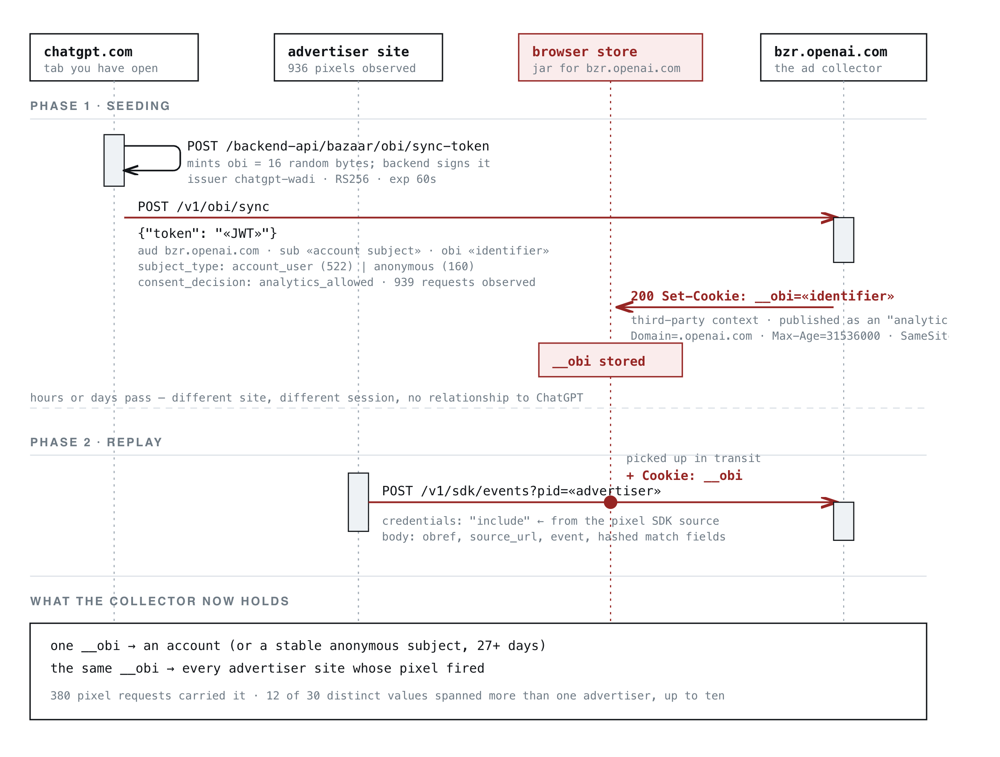

05 buchodi.com 게시일 2026.09.20
ChatGPT 광고 코드, 외부 웹 활동과 계정 연결 논란

이번 사안은 제품 발표가 아니라 프라이버시 분석 글에서 시작됐다. 글 작성자는 ChatGPT 광고 플랫폼 코드가 외부 웹사이트 방문 데이터를 OpenAI로 보내고, 그 데이터를 ChatGPT 계정이나 기기 식별자와 연결할 수 있다고 주장했다. OpenAI의 공식 입장이 기사 본문에는 실리지 않았다.
핵심 브리핑
이 이슈는 ChatGPT 광고 코드가 다른 웹사이트에서의 이용자 행동을 수집하는지에 관한 문제다. 비전문가 기준으로 보면, 사용자가 ChatGPT를 쓰는 동안 만들어진 식별자가 다른 쇼핑몰이나 예약 사이트 방문 기록과 묶일 수 있다는 주장이다.
글 작성자는 OpenAI의 광고 수집기 bzr.openai.com이 __obi라는 쿠키를 .openai.com 범위로 설정한다고 적었다. 이 값은 ChatGPT 계정과 연결되며, 광고주 웹사이트에 설치된 OpenAI 코드가 로드될 때 OpenAI로 다시 전송된다고 주장했다. 전송 데이터에는 사용자가 보는 페이지, 찾는 상품, 읽는 기사, 구매 행동이 포함될 수 있다고 설명했다.
작성자는 자신의 휴대폰에서 이 메커니즘을 재현했다고 밝혔다. 두 가지 독립적 캡처 방식으로 검증했고, 1,029개 호스트명과 광고 픽셀 936개의 수개월 트래픽을 교차 점검했다고 적었다. 다만 이는 독립 분석자의 관찰 결과이며, OpenAI의 공식 확인은 기사 본문에 없다.
관찰된 세부 내용도 제시했다.
- 디코딩한 동기화 토큰 932개 가운데 736개는 account_user, 196개는 anonymous였다
- 익명 식별자도 기기당 하나로 유지됐고 최소 27일 지속됐다고 적었다
- 관찰된 이벤트에서는 페이지가 긁어 온 식별 정보가 광고주가 직접 넘긴 식별 정보보다 685건 대 255건으로 더 많았다
- 우편번호는 28개 사이트에서 100건 수집돼 가장 많이 관찰된 폼 필드였다고 했다
- 작성자 기기에서는 하나의 __obi 값이 12개 상업 웹사이트, 13개 서로 다른 픽셀 ID에서 OpenAI로 전송됐다고 적었다
- 더 넓은 트래픽에서는 서로 다른 __obi 값 30개 중 12개가 둘 이상의 광고주 아래에서 나타났고, 그중 하나는 10개 광고주에서 보였다고 밝혔다
민감정보 차단 장치도 소개했다. 비밀번호, 일회용 코드, 카드번호, 사회보장번호, 생년월일, 병력, 진단, 법원 관련 필드는 거부 목록에 들어 있다고 적었다. 하지만 국가, 지역, 도시, 우편번호는 평문으로 전송된다고 주장했다.
| 요청 | __obi 전송 여부 | 비고 |
|---|---|---|
| GET bzrcdn.openai.com/sdk/oaiq.min.js | yes | 스크립트 로드 자체 |
| POST bzr.openai.com/v1/sdk/events with obref | yes | 전환 이벤트 |
| POST bzr.openai.com/v1/sdk/events, bare body | yes | SDK의 자격증명 없는 경로 |
| GET bzrcdn.openai.com/pixel-config/... | no cookie header at all | 대조군 |
맥락 읽기
이 사안의 핵심은 광고 측정 도구와 계정 기반 AI 서비스가 같은 사업자 아래 묶였을 때 생기는 경계 문제다. 광고주는 전환 측정용 픽셀을 설치했을 뿐인데, 그 뒤에서 어떤 계정 연결이 이뤄지는지 알기 어렵다는 것이 글의 문제 제기다.
작성자는 OpenAI가 분석 동의와 마케팅 동의를 따로 운영하지만, 자신이 해독한 동기화 토큰에는 모두 analytics_allowed가 들어 있었다고 적었다. 즉 마케팅을 거부하고 분석만 허용한 경우에도 이 식별 동기화가 작동할 수 있다는 주장이다. 이 대목은 규제기관이 가장 먼저 볼 만한 쟁점이다.
| 쿠키 | 결과 |
|---|---|
| oai-did, oaicom-stable-id | 차단, SameSite=Lax |
| oai-client-auth-info, session cookies | 차단, 도메인 불일치 |
| __obi | 전송됨 |
업계의 움직임
기사 본문에는 OpenAI의 공식 반응이나 광고주들의 공개 입장이 없다. 여러 매체가 함께 다룬 사건이라는 정보도 payload에는 없다. 아직 공개된 반응은 확인되지 않았다.
시사점과 체크포인트
금융IT 기업은 웹 분석 코드와 광고 코드를 법무 문서가 아니라 실제 네트워크 요청 기준으로 다시 봐야 한다. 특히 고객 로그인 서비스와 외부 추적 코드가 한 페이지에 섞일 때 위험이 커진다.
- 우리 서비스에 제3자 픽셀과 SDK가 몇 개 들어가는지 먼저 목록화해야 한다
- 동의 배너 문구와 실제 전송 동작이 일치하는지 브라우저 캡처로 검증할 필요가 있다
- 이메일, 전화번호, 우편번호 같은 필드가 해시되더라도 개인정보 처리 위탁과 국외 이전 이슈는 남는다
- 대출, 보험, 건강, 분쟁 같은 민감한 경로명이 URL path에 남아 있으면 질의 문자열이 없어도 위험할 수 있다
- 보안팀, 개인정보보호팀, 마케팅팀이 함께 태그 관리자 설정을 점검해야 한다
이번 내용은 독립 분석 글에 기반한다. OpenAI의 공식 해명과 규제기관 판단이 아직 없으므로, 사실관계는 추가 확인이 필요하다.
주요 용어
원문 정보
제목: ChatGPT now knows what you do on other websites via ad collector
게시일: 2026.09.20
출처 URL: https://www.buchodi.com/chatgpt-now-knows-what-you-do-on-other-websites-via-ad-collector/